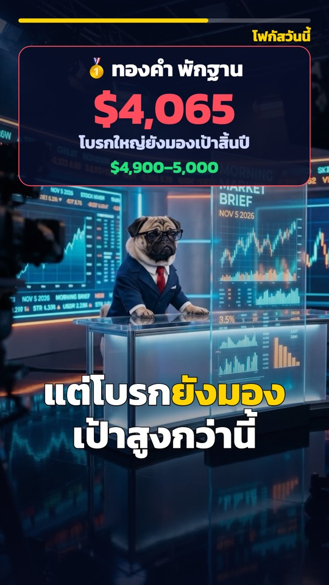
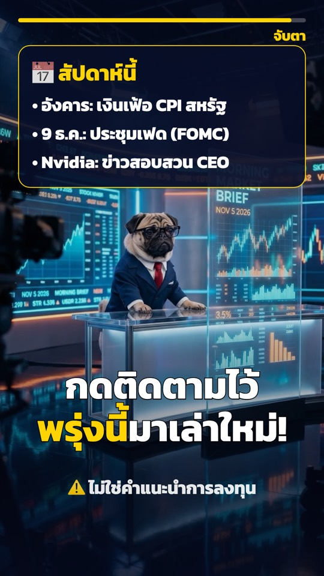

สรุปตลาดเช้านี้ · every weekday
A personal tool that turns a daily English market summary into a 30-second Thai market-news video, presented by our pug reporter. After the owner reviews and approves each video, the tool posts it to the owner's own TikTok account.
Used only by its owner. It does not offer accounts or services to the public.


Four beats, one pug, exactly 30 seconds. The cards show more than the voice can say.
A greeting and the single biggest story of the day, as one punchy headline.
A scoreboard of 4–6 markets with overnight moves: ▲ up, ▼ down, ● flat.
One asset or sector to watch today, with the reason and context such as analysts' targets.
What's coming this week: data releases, central-bank meetings, a big company story.
An English market summary is prepared each weekday morning.
It is rewritten as a short, casual Thai script. Every number shown on screen is checked against the original brief.
A Thai voice-over, karaoke captions, market cards and background music are rendered into a 1080×1920 video.
The owner watches the video. Only after they approve it is it posted to the owner's own TikTok account.
Videos summarise publicly reported market news for general information. Each one says so on screen and out loud.
Figures come only from the source brief. They are never rounded to new values or “updated”.
TikTok sign-in tokens are stored only on the owner's computer. Nothing is collected from viewers. Privacy Policy